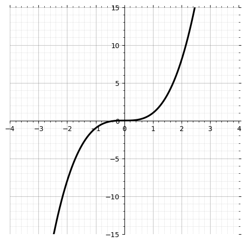

Welcome to GraphDetector
We hope it will help you successfully identify the class of your graph. Follow these simple steps to get started:
- First, load a file in the Drag & Drop area. You can either drag a file from your folder or simply click on browse.
- Then press the Start button and wait for the result.
- See the result!
Which pictures best to use?
The reference image of the graph should show only a single clear graph on a plain white background. The graph must be complete and centered, with all its nodes and edges fully visible. There should be no extra elements such as formulas, text, labels, grids, or watermarks overlapping the graph. The lines and structure of the graph should be sharp and easy to see, without blur or distortion. The focus must remain only on the graph itself.
Etalon image of cubic function graph